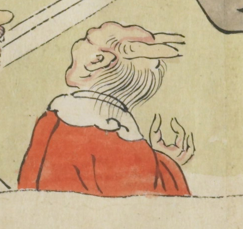

2本の角が生えた鬼。赤い衣服を身にまとい、首には白い襟巻きをまいている。薄く細い後ろ髪をしている。
出典：親書誌：U426_nichibunken_0079：酒天童子絵巻；シュテンドウジエマキ／日付：2006／資源識別子：U426_nichibunken_0079_0007_0006
Copyright (c)2010- International Research Center for Japanese Studies, Kyoto, Japan. All rights reserved.